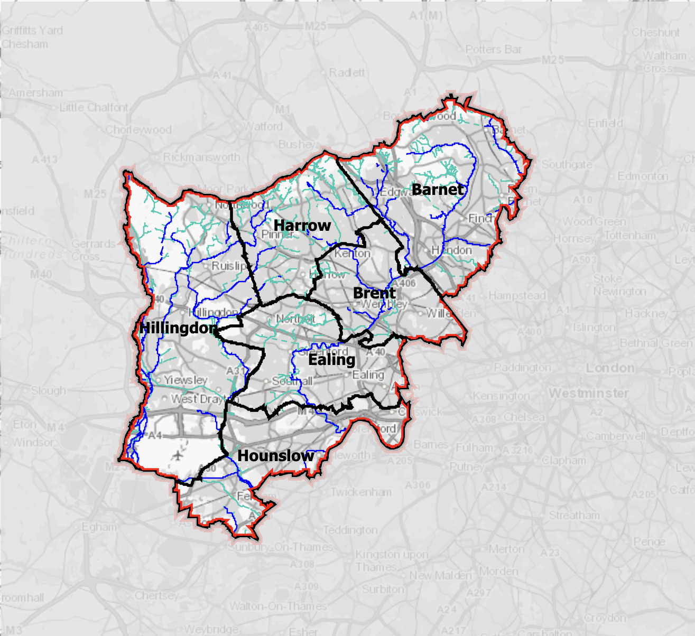

5 Week 4 Policy
London Flood Risk Management Framework
5.1 Summary
Flood risk management remains a significant policy challenge in London, as it sits at the intersection of spatial planning, infrastructure resilience, and emergency preparedness. The London Plan 2021, as the principal strategic policy guiding the city’s development, explicitly addresses this issue through Policy SI 12 (Flood Risk Management) and Policy SI 13 (Sustainable Drainage). These policies emphasise that both current and future flood risks, from all sources, should be managed in a sustainable and cost-effective manner. The Plan also requires boroughs to draw upon the Strategic Flood Risk Assessment (SFRA) and Local Flood Risk Management Strategies to identify both site-specific and cumulative risks, and to develop appropriate mitigation measures(London City Hall, 2021). This highlights that, in London, flood risk is not simply an occasional emergency, but a long-term planning and resilience concern that continuously shapes urban development decisions.
The severity of this challenge is further reinforced by the presence of multiple, interacting sources of flood risk. The London Strategic Flood respond Framework identifies that major flood events may arise from fluvial, tidal, surface water, groundwater, and reservoir-related sources, each of which can generate widespread and severe impacts across the city (Callum and Environment Agency, 2022). As such, the framework treats flooding as a city-wide strategic issue and stresses the need for coordinated, cross-sector responses before, during, and after flood events. At a more local scale, the London Strategic Flood Risk Assessment 2023 demonstrates that risks persist even in areas with relatively well-developed flood defences. Residual risks associated with the River Thames, including both fluvial and tidal flooding, remain, while hotspots of surface water and sewer flooding continue to be identified. In addition, climate change is expected to alter the frequency, depth, velocity, and severity of future flood events (City of London Corporation, 2023).
Spatial evidence further shows that flood risk is not evenly distributed across London. Surface water flood risk maps for West London, for example, indicate clear spatial variation, with risks concentrated along drainage pathways, river networks, and specific localised hotspots. This suggests that effective flood risk management requires not only recognising the existence of flooding, but also identifying where exposure and vulnerability are most concentrated. From this perspective, London’s policy approach extends beyond post-event response towards the proactive identification of at-risk areas, alongside the implementation of planning and drainage measures to reduce risk and enhance long-term resilience.

5.2 Application
Within this policy and environmental context, remote sensing data can providing spatial evidence to identify flood-prone or flood-affected areas, thereby supporting flood risk management strategies.
Synthetic Aperture Radar (SAR) imagery represents a particularly suitable primary remote sensing dataset for supporting flood risk management in London, with elevation or terrain data providing an important complementary source of evidence. Flood events often occur under conditions of heavy rainfall and cloud cover, where optical imagery is limited in its effectiveness. In contrast, SAR data can capture surface conditions regardless of weather or illumination, making it more reliable for identifying flood-affected areas. Terrain data adds a critical topographic dimension by helping to identify low-lying areas where water is more likely to accumulate. This is especially relevant in the London context, where current policy emphasises the need to identify areas subject to both site-specific and cumulative flood risks, and to mitigate these through planning and drainage interventions (London City Hall, 2021).
- First acquiring SAR imagery corresponding to a specific flood event, alongside elevation or terrain data for the same area.
- The SAR data can then be used to delineate the likely extent of flooding, while the terrain data helps to identify low-lying zones that may remain susceptible even beyond a single event.
- These outputs can subsequently be overlaid with land use, transport infrastructure, and population data to identify areas of higher exposure and vulnerability.
This step is critical, as the challenge of flood risk management in London lies not only in anticipating where flooding may occur, but also in understanding where impacts are likely to be greatest and where intervention is most needed (Callum and Environment Agency, 2022).
From a policy perspective, such spatial analysis can inform more targeted planning decisions, including where additional drainage measures, flood-resilient design, or development restrictions may be required. It can also support preparedness by helping local authorities prioritise areas for monitoring, early warning, and emergency response. The strength of this approach lies in its ability to provide spatially continuous evidence across a metropolitan scale. However, while remote sensing can indicate where flooding or physical vulnerability may be concentrated, it cannot, on its own, account for drainage performance, infrastructure condition, or the broader social consequences of flood events. It is therefore most effective when used in conjunction with local flood assessments and planning judgement, rather than as a standalone solution (City of London Corporation, 2023; Callum and Environment Agency, 2022).
5.3 Reflection
Flood risk management in London extends beyond an environmental concern and is fundamentally shaped by governance and planning processes. Although flooding is commonly framed as a natural hazard, the policy documents discussed here indicate that planning frameworks, infrastructure provision, and institutional coordination play an equally important role in managing risk. The key issue is not simply the occurrence of flooding, but how decision-makers identify areas of highest risk, determine which assets and communities are most vulnerable, and allocate limited resources accordingly. This also highlights that flood risk is unevenly experienced: even where levels of physical exposure are comparable, outcomes may vary depending on infrastructure quality, land use, and local capacity to respond.
Remote sensing provides a means of capturing the spatial variability of flood risk across a metropolitan area, rather than assuming uniform vulnerability. This is particularly useful for prioritisation, as it allows areas with concentrated flood extent, low-lying topography, or higher potential exposure to be identified more clearly. In this sense, it supports a shift from general awareness of flood risk towards a more spatially targeted understanding of where intervention may be most needed. However, remote sensing does not replace the need for local planning judgement, engineering assessment, or sustained investment in drainage and infrastructure systems. While satellite data can indicate flood-prone locations or areas of water accumulation, it cannot fully represent drainage capacity, sewer system performance, maintenance conditions, or the broader social consequences of flood events.
The significance of spatial data lies not only in mapping patterns, but in informing practical decision-making. In the London context, remote sensing is most valuable when used to support the identification of priority areas, guide planning and preparedness, and contribute to long-term resilience. It should therefore be understood as part of a wider decision-making framework rather than as a standalone solution. More broadly, this case study suggests that the value of Earth observation depends less on the technical outputs themselves than on how effectively they are integrated into policy processes. Its primary contribution lies in enabling more informed and spatially targeted decisions, rather than providing a comprehensive solution in isolation.